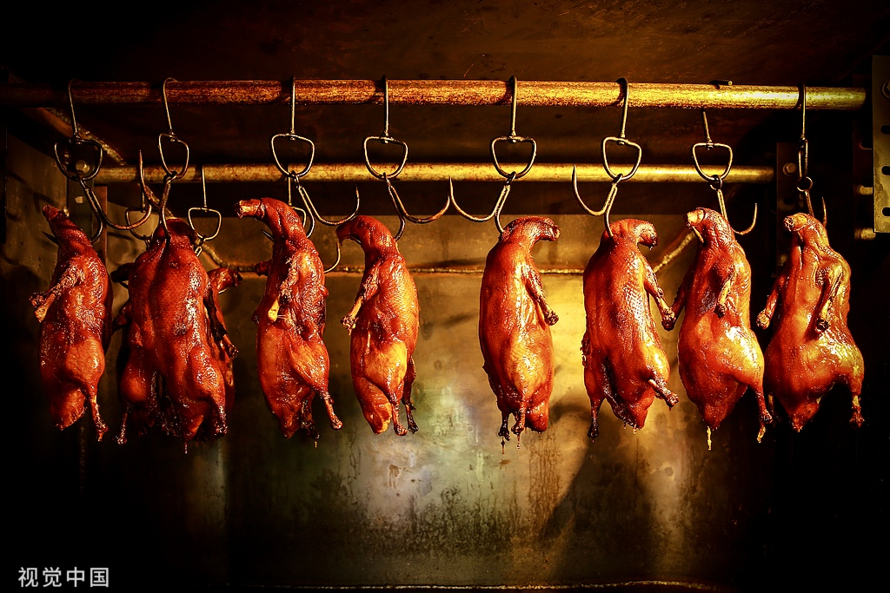
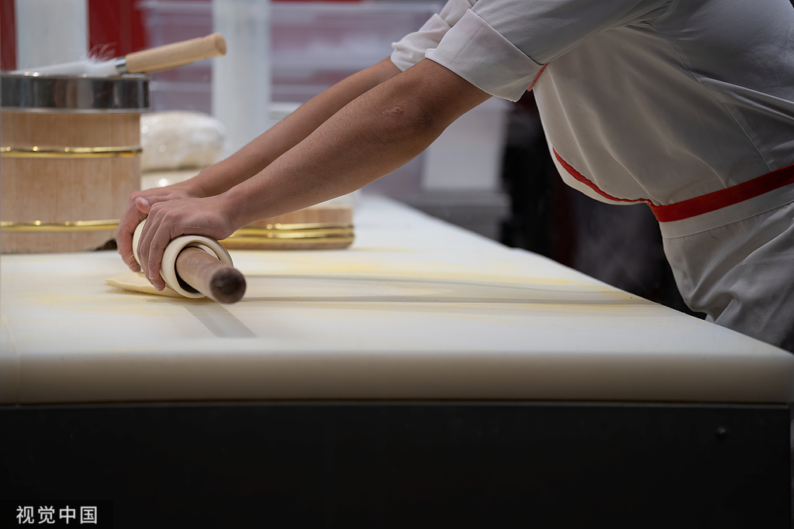
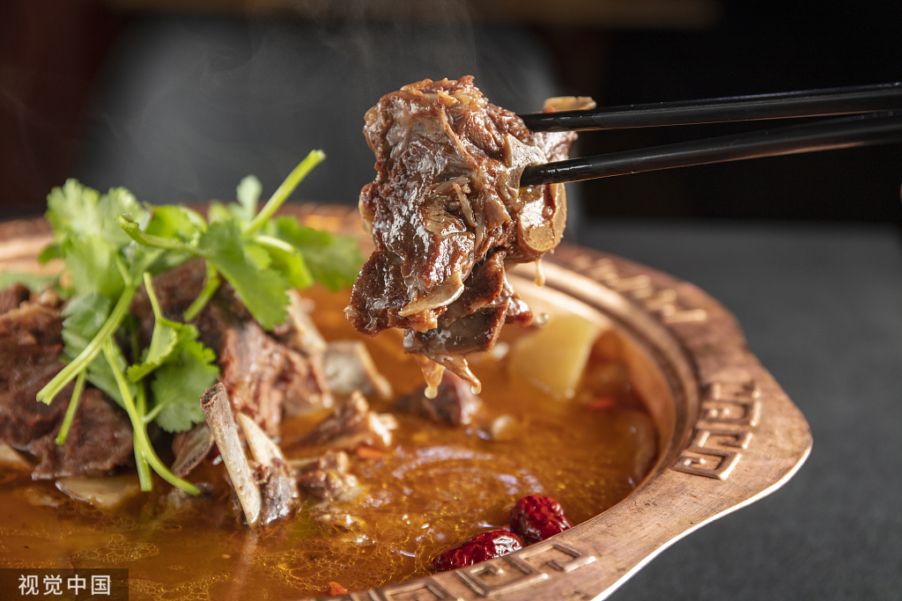
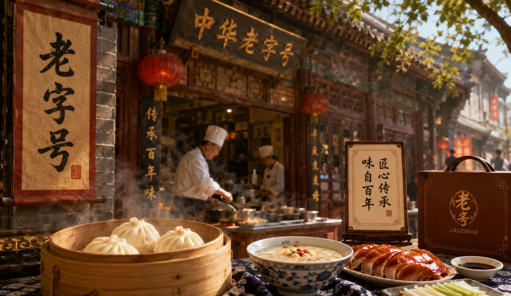
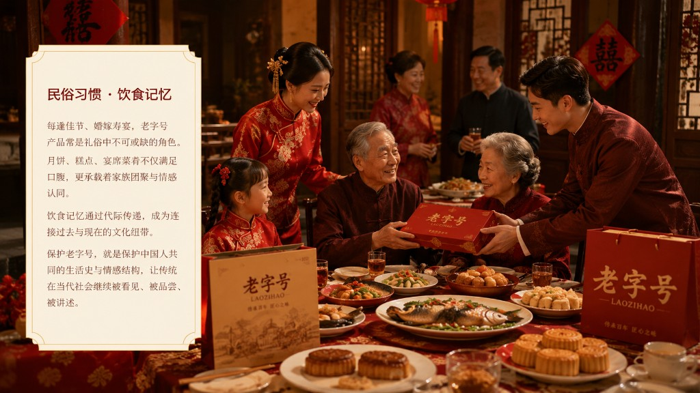

图片待补充挂炉烤鸭技艺
果木挂炉、明火烤制，讲究选鸭、充气、晾皮、片鸭等数十道工序。非遗传承人以数十年功力掌控火候，使鸭皮酥脆、肉质鲜嫩，体现京味饮食的极致匠心。
中华传统美食文化专题
《匠心传承——老字号背后的文化密码》
百年技艺薪火相传，一味美食承载时代记忆。
「中华老字号」是指拥有世代传承的产品、技艺或服务，具有鲜明中华民族传统文化背景和深厚文化底蕴，取得社会广泛认同，形成良好信誉的品牌。商务部认定标准强调历史传承、文化价值与社会影响力。老字号不仅是商业符号，更是活态的文化遗产，连接着传统技艺、地方记忆与国民情感，在当代仍持续影响着中国人的饮食方式与文化认同。
多数老字号创于明清，以家族或师徒方式延续配方与技艺，形成独特品牌基因。
商务部启动「中华老字号」认定工作，建立规范标准，推动品牌保护与传承。
多项老字号核心技艺列入国家级非物质文化遗产名录，获得制度性保护。
在守正基础上拥抱数字化与国潮设计，让百年品牌融入现代生活。

图片待补充果木挂炉、明火烤制，讲究选鸭、充气、晾皮、片鸭等数十道工序。非遗传承人以数十年功力掌控火候，使鸭皮酥脆、肉质鲜嫩，体现京味饮食的极致匠心。

图片待补充虾饺、烧卖、叉烧包等点心讲究手工现做、即蒸即食。和面、制馅、捏形各有章法，一双手的温度与经验，成就岭南早茶"清鲜为本"的审美传统。
苏式、京式、广式糕点各有制坊之道。选料、制馅、包酥、烘烤环环相扣，应季而制、形神兼备，承载节令礼俗与江南手作饮食记忆。

图片待补充铜锅导热、炭火可控，清水涮肉突出本味。切肉、蘸料、围炉共食构成完整饮食礼仪，体现北方清真饮食与火锅文化的深度融合。
老字号之所以能够跨越百年，根本在于一代代匠人对手艺的坚守与敬畏。从清晨选料到深夜收工，师傅们重复看似单调的工序，却在每一次揉面、片鸭、包馅中注入经验与心力。师徒相传不仅是技艺的复制，更是职业伦理与审美标准的延续——"精益求精、诚敬专一"早已融入老字号的文化基因。许多非遗传承人一生只做一件事，拒绝 shortcuts，宁可慢工出细活，也要守住品牌的底线与尊严。正是这种对品质的极致追求，让老字号在工业化浪潮中依然保有人工温度，成为当代社会稀缺的可信与温情。

图片待补充老字号是中华优秀传统文化的重要载体。其核心技艺往往对应一项或多项非物质文化遗产，与地方方言、节令习俗、礼仪规范紧密相连。一项挂炉烤鸭技艺，背后是北京城的市场文化与宫廷饮食传统；一笼小笼包，则浓缩了江南水文地理与商贸往来。老字号将抽象的文化转化为可感可味的日常经验。

图片待补充每逢佳节、婚嫁寿宴，老字号产品常是礼俗中不可或缺的角色。月饼、糕点、宴席菜肴不仅满足口腹，更承载着家族团聚与情感认同。饮食记忆通过代际传递，成为连接过去与现在的文化纽带。保护老字号，就是保护中国人共同的生活史与情感结构，让传统在当代社会继续被看见、被品尝、被讲述。
老字号拥抱电商与直播带货，将经典产品送达全国。线上下单、冷链配送，让百年味道突破地域限制，在数字化渠道中延续品牌生命力。
联名礼盒、国潮包装、节气限定款层出不穷。传统纹样与现代设计碰撞，让老字号视觉焕新，成为年轻人愿意分享的文化消费品。
非遗师傅走进镜头，展示片鸭、包点等幕后工序。短视频以直观叙事打破距离感，让匠心故事在社交平台广泛传播，吸引新受众关注。
轻食化、小份量、体验店等策略贴近年轻消费习惯。老字号以"守正创新"回应时代，在保留内核的同时拓展客群，实现跨代际传承。
在坚守传统配方与核心技艺的前提下，老字号正以多元路径融入现代社会——既不忘本来，又面向未来，书写"老品牌、新表达"的时代篇章。
老字号不仅传承着技艺，更承载着中国人的文化记忆与情感认同。